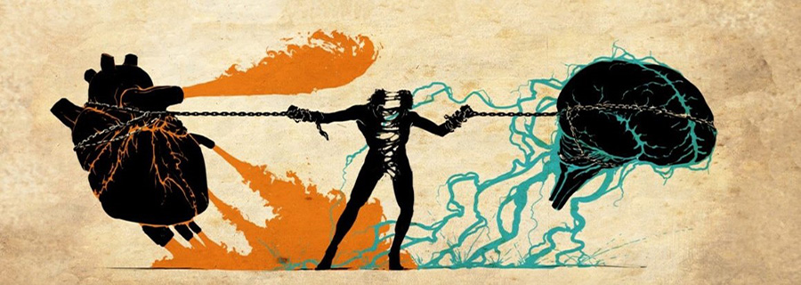

Capítulo 2 · «He venido para que tengan vida»
(Evangelium Vitae )

Cristo, Fuente de Vida
El segundo capítulo de Evangelium Vitae resalta que la vida humana alcanza su sentido más profundo en Cristo. Él vino al mundo para que todos tengan vida en abundancia, mostrando que la existencia no se limita a lo biológico, sino que es una vocación eterna fundamentada en el amor de Dios.

Defender y Promover
El Papa subraya que custodiar la vida en todas sus etapas es una misión que la Iglesia y cada creyente reciben de Cristo. Proteger a los más débiles y vulnerables no es solo un deber ético, sino un signo concreto de fidelidad al Evangelio de la vida que transforma a la sociedad.
En este capítulo, San Juan Pablo II nos muestra cómo Cristo revela la plenitud de la vida, la dignidad de cada persona y la misión de custodiar la existencia humana en todas sus etapas.
Cristo y la Vida
Cristo ilumina nuestra fragilidad y nos revela el verdadero sentido de la vida: no estamos destinados a la muerte, sino a la plenitud en Él. (Evangelium vitae)
Dignidad Humana
Todo ser humano es imagen de Dios y está llamado a configurarse con Cristo. Su dignidad es inalienable y no depende de condiciones externas. (Evangelium vitae)
La Promesa Eterna
La fe en Cristo ofrece el don de la vida eterna. No es solo prolongación biológica, sino participación en la vida divina. (Evangelium vitae)
Venerar la Vida
Toda vida es sagrada: Dios pedirá cuentas por la sangre del hermano. Amar la vida del otro es condición para vivir el Evangelio. (Evangelium vitae)
Custodiar y Promover
La responsabilidad humana consiste en acoger, custodiar y promover la vida en toda circunstancia, desde su inicio hasta su fin natural. (Evangelium vitae)
El No Nacido
El niño en el seno materno es persona conocida y amada por Dios. Atentar contra su vida es negar el don divino más grande. (Evangelium vitae)
La Vejez y el Dolor
Ni la enfermedad, ni el sufrimiento, ni la vejez hacen perder la dignidad. Toda vida conserva su valor hasta el último instante. (Evangelium vitae)
El Camino del Espíritu
La Ley de Dios orienta la vida y el Espíritu Santo capacita para amar con un amor que da vida y transforma. (Evangelium vitae)
Culmen en la Cruz
La Cruz es la revelación suprema del Evangelio de la Vida: allí el amor vence a la muerte y se abre la puerta a la salvación. (Evangelium vitae)
Políticas Antinatalistas y Antifamiliares: Análisis Doctrinal y Jurídico
¿Qué son las Políticas Antinatalistas?
Las políticas antinatalistas son estrategias y programas impulsados por gobiernos, organismos internacionales o grupos de interés que buscan reducir activamente la natalidad y limitar la procreación humana. Estas políticas suelen presentarse bajo eufemismos como "control poblacional", "planificación familiar" o "derechos reproductivos", pero en la práctica promueven la disminución de la tasa de fecundidad mediante métodos que van desde la presión cultural hasta la coerción económica o legal.
Políticas Antinatalistas (Evangelium vitae)

San Juan Pablo II, en la Encíclica Evangelium Vitae, denuncia explícitamente aquellas políticas que, bajo el pretexto del progreso o el control poblacional, promueven prácticas contrarias a la vida y a la dignidad humana.
Entre estas políticas se identifican:
Esterilizaciones masivas

Campañas implementadas en países en vías de desarrollo, en ocasiones sin consentimiento informado, impulsadas por organismos internacionales.
Distribución indiscriminada de anticonceptivos

Programas que condicionan ayudas económicas y educativas, generando dependencia y presión cultural contraria a los valores locales.
Aborto legalizado

Presentado como "derecho reproductivo", pero que en la práctica priva de la vida al no nacido y deja secuelas psicológicas profundas.
Consecuencias de estas políticas
1. Reducción de la vida a estadísticas

Cosificación del ser humano que olvida la dignidad irrepetible de cada persona.
2. Imposición cultural

Condicionamiento de ayuda internacional a la adopción de agendas antinatalistas.
3. Envejecimiento social
 " alt="Envejecimiento social" class="content-img"/>
" alt="Envejecimiento social" class="content-img"/>
Impacto negativo en la economía, sistemas de pensiones y tejido generacional.
En El Salvador, si bien el ordenamiento jurídico protege la vida desde la concepción, se constata una presión internacional constante para introducir el aborto y programas de "salud reproductiva" con componentes antinatalistas.
¿Qué son las Políticas Antifamiliares?
Las políticas antifamiliares son medidas legislativas, educativas y culturales que debilitan intencionalmente la institución familiar tradicional, entendida como la unión estable entre hombre y mujer abierta a la vida. Estas políticas buscan redefinir el concepto de familia, relativizar el matrimonio, y minimizar el papel de la maternidad y paternidad, presentando alternativas que fragmentan el núcleo fundamental de la sociedad.
Políticas Antifamiliares (Evangelium vitae)
Paralelamente a las políticas antinatalistas, se observa un ataque sistemático a la familia, núcleo fundamental de la sociedad:
Relativización del matrimonio

Deconstrucción de su esencia sacramental reduciéndolo a un mero contrato revocable sin estabilidad.
Desprecio de la maternidad/paternidad
Narrativa cultural que presenta a los hijos como obstáculo al desarrollo personal y profesional.
Separación amor-vida

Promoción de una sexualidad desconectada de su finalidad procreativa y unitiva.
Fundamentación Doctrinal Eclesial
El Magisterio de la Iglesia Católica ha desarrollado un corpus doctrinal sólido que sustenta la defensa de la vida y la familia:
Humanae Vitae (1968)

Encíclica de Pablo VI que reafirma la doctrina tradicional sobre el matrimonio y defiende la apertura a la vida en cada acto conyugal.
Veritatis Splendor (1993)

Encíclica de Juan Pablo II sobre las fundamentaciones de la moral católica, que ilumina la incoherencia de las políticas antivida.
Familiaris Consortio (1981)

Exhortación apostólica que define a la familia como "iglesia doméstica" y célula vital de la sociedad.
Catecismo de la Iglesia Católica

En su numeral 2372, explicita que la autoridad política no puede sustituir la iniciativa de los esposos en la transmisión de la vida.
Evangelium Vitae (1995)

Encíclica que constituye el documento central de referencia para la defensa de la vida frente a la cultura de la muerte.
Sustento Jurídico Internacional y Nacional
El marco legal salvadoreño e internacional ofrece respaldo sólido a la protección de la vida desde la concepción:
Constitución de la República de El Salvador (Art. 1)

Reconoce la personalidad jurídica del ser humano desde el instante de la concepción; establece la obligación del Estado de implementar políticas públicas de protección integral de la vida.
Declaración Universal de Derechos Humanos

En su artículo 3 establece que "todo individuo tiene derecho a la vida, a la libertad y a la seguridad de su persona", fundamento del derecho a la vida del concebido.
Convención Americana sobre Derechos Humanos (Pacto de San José)
Artículo 4.1: "Toda persona tiene derecho a que se respete su vida. Este derecho estará protegido por la ley y, en general, a partir del momento de la concepción".
Convención sobre los Derechos del Niño

En su preámbulo reconoce que "el niño, por su falta de madurez física y mental, necesita protección y cuidado especiales, incluso la debida protección legal, tanto antes como después del nacimiento".
A pesar de las presiones internacionales para liberalizar el aborto, El Salvador mantiene su marco jurídico coherente con la Constitución y los tratados internacionales que protegen la vida humana desde la concepción.
Impactos sociales, psicológicos y económicos
Efectos del aborto
Mayor riesgo de síndrome post-aborto, depresión y otras secuelas psicológicas; la reducción de mortalidad materna depende principalmente del acceso a servicios de salud prenatal y obstétrica de calidad, no de la legalización del aborto.
Costo social y económico
Envejecimiento poblacional acelerado, crisis de sostenibilidad de los sistemas de pensiones, debilitamiento del tejido social y disminución del capital humano.
Modelo pro-vida integral
Propuesta de un paradigma alternativo que incluye apoyo integral a madres gestantes, promoción de la adopción, acompañamiento postnatal e inclusión social de familias en situación de vulnerabilidad.
Respuestas pastorales y comunitarias

Acciones concretas propuestas desde la comunidad eclesial:
Ministerios de acompañamiento
Implementación de programas de apoyo a embarazadas en situación vulnerable, consejería especializada y casas de acogida.
Capacitación en bioética
Formación especializada para personal de salud, juristas, educadores y agentes pastorales en principios de bioética personalista.
Colaboración con el Estado
Incidencia en políticas públicas a favor de la familia, la maternidad y el cuidado de enfermos y personas con discapacidad.
Educación en sexualidad integral
Programas de educación afectivo-sexual según la antropología cristiana, que promuevan una sexualidad responsable y abierta a la vida.
Conclusión: La postura provida y profamilia cuenta con un fundamento sólido que articula fe, razón, medicina, derecho y experiencia. El Salvador tiene la oportunidad de ejercer un liderazgo regional desde el compromiso social coherente con sus principios constitucionales y su identidad cultural, respaldado por una pastoral orgánica e integral.
Fundamento Ético y Moral
Antropología teológica: persona creada a imagen de Dios (Gn 1,27).
La vida como don sagrado
Depósito confiado por Dios; implica cuidar, respetar y promoverla en todas sus etapas.
Dignidad intrínseca e inviolable
No depende de edad, salud o condición; aborto/eutanasia ofenden al Creador.
“No matarás” trasciende lo legal
Llamada a la santidad: cultura de la vida mediante amor, compasión y justicia social.
"Dios, único dueño de la vida, confía al hombre el noble valor de la vida..." (Evangelium Vitae).
Desde la razón y la filosofía moral
Argumentos racionales accesibles a todos:
Ley natural
La vida humana tiene valor único e inviolable; ética basada en lo que somos.
Crítica al utilitarismo
No reducir la vida a utilidad o costo; protege a los más débiles.
Igualdad moral fundamental
Todo humano merece protección por su mera pertenencia a la especie.
Desde la ética médica (práctica clínica)

La medicina sirve a la vida:
No maleficencia
Diferencia entre permitir morir y provocar la muerte.
Cuidados paliativos
Respuesta ética integral al sufrimiento hasta la muerte natural.
Doble efecto
Aliviar el dolor aunque acorte la vida como efecto no deseado; intención: aliviar, no matar.
En El Salvador hay lineamientos de paliativos; urge fortalecer su implementación y acceso.
Desde la ley (nacional e internacional)

Constitución (Art. 1)
Protección desde la concepción y obligación estatal de políticas a favor de la vida.
Derecho internacional
Pacto de San José (4.1) refuerza el marco salvadoreño.
Presiones externas buscan liberalizar el aborto; la respuesta apela a Constitución y vida como bien superior.
5 Impactos sociales, psicológicos y económicos
Efectos del aborto
Riesgo de depresión/ansiedad/culpa; clave: salud prenatal y obstetricia de calidad.
Costo social
Envejecimiento, crisis de cuidados y soledad, debilitamiento del tejido social.
Modelo pro-vida integral
Apoyos a madres, adopción, acompañamiento postnatal, e inclusión social.
Respuestas pastorales y comunitarias
La Iglesia responde con acciones:
Ministerios de acompañamiento
Grupos de apoyo, consejería y casas de acogida.
Capacitación en bioética
Formación para profesionales y agentes pastorales.
Colaboración con el Estado
Políticas de apoyo a familia, maternidad y enfermos.
Sexualidad responsable
Educación afectivo-sexual con visión integral.
Conclusión: Base ética y moral sólida y multifacética; El Salvador puede ser referente si suma compromiso social y pastoral.
Recursos y Compromiso - Construyendo la Cultura de la Vida
Llamado de San Juan Pablo II (Evangelium Vitae)
Construir la “cultura de la vida” exige conversión personal y social:
Cambio de mentalidad
Ver en cada persona un rostro amado por Dios.
Compromiso comunitario
Estructuras sociales y legales que protejan la vida.
Conciencia del futuro
El mañana depende de nuestras opciones por la vida.
Llamado a todos: creyentes y no creyentes, gobernantes y ciudadanos, jóvenes y ancianos.
Acciones concretas
1. Apoyo a madres y familias (Evangelium Vitae)
- Casas de acogida con apoyo integral.
- Redes parroquiales y comunales.
- Ayuda económica directa.
2. Justicia social (Evangelium Vitae)
- Trabajo digno y conciliación familiar.
- Políticas familiares: vivienda, subsidios, fiscalidad.
- Economía al servicio de la vida.
3. Cuidado de enfermos y ancianos (Evangelium Vitae)

- Paliativos universales.
- Acompañamiento espiritual y humano.
- Rechazo a la eutanasia.
4. Educación integral (Evangelium Vitae)
- Educación afectivo-sexual con valores.
- Bioética y dignidad humana.
- Formación de conciencias en medios/redes.
5. Voluntariado juvenil (Evangelium Vitae)
- Campañas por la vida y liderazgo joven.
- Voluntariado en hospitales/geriátricos.
6. Derechos humanos (Evangelium Vitae)

- Incidencia legal/política pro-vida.
- Denuncia de abusos (abortos forzados, esterilizaciones).
- Alianzas con sociedad civil.
Mensaje final del Papa
"¡Respeta, defiende, ama y sirve a la vida, a toda vida humana!" (EV, n. 5)
"El futuro de la humanidad pasa por la familia" (FC, n. 86)

"Todo atentado contra la vida es un atentado contra la paz" (San Juan Pablo II, 2001)
Reflexión final: Compromiso salvadoreño con la vida

El Salvador tiene una oportunidad histórica. La ley es un faro, pero requiere compromiso social:
- Compromiso activo de familias, educadores, medios, empresas, salud y jóvenes.
- Políticas públicas valientes que apoyen maternidad, familias numerosas, enfermos y ancianos.
- Firmeza frente a presiones internacionales contrarias a la vida y la familia.
La Cultura de la Vida se construye día a día con gestos concretos de acogida, compasión, valentía y amor.